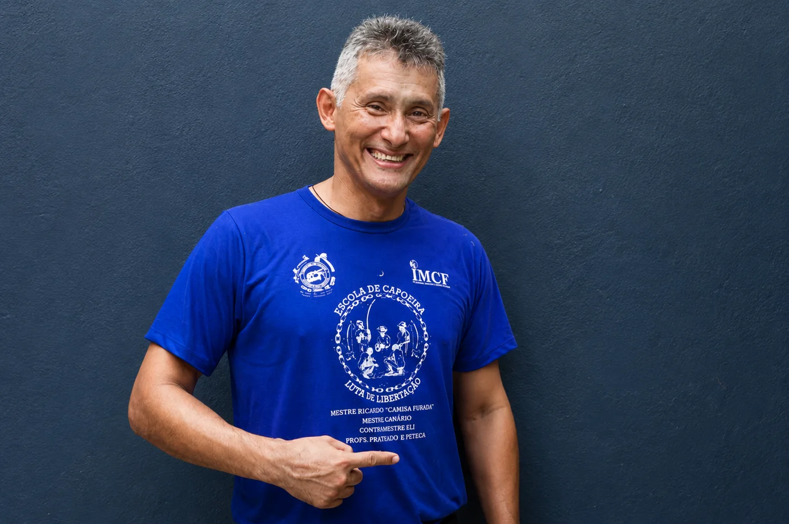

Missão
Preservar e difundir a capoeira como patrimônio cultural imaterial, transmitindo valores ancestrais, fortalecendo o legado histórico afro-brasileiro e promovendo cidadania, disciplina, respeito e educação.
História, missão, visão, valores e impacto social da ECLL.
Fundada em 2007 por Dermilson Brasil de Freitas, o Mestre Canário, a Escola de Capoeira Luta de Libertação nasceu com o propósito de preservar, ensinar e difundir a capoeira como expressão da cultura afro-brasileira e instrumento de transformação social.
Com sede em Manaus, Amazonas, a escola atua em diferentes regiões da cidade e atende aproximadamente 100 alunos, entre crianças, adolescentes, adultos e pessoas da terceira idade.
A ECLL é reconhecida oficialmente como Ponto de Cultura pelo Ministério da Cultura.
Preservar e difundir a capoeira como patrimônio cultural imaterial, transmitindo valores ancestrais, fortalecendo o legado histórico afro-brasileiro e promovendo cidadania, disciplina, respeito e educação.
Ser um agente ativo de transformação social, utilizando a capoeira para combater a vulnerabilidade social, fortalecer as comunidades e ampliar oportunidades.
Ensino da Capoeira Tradicional Baiana, Angola e Regional, incluindo movimentos, esquivas, fundamentos, musicalidade, cantos e prática de instrumentos.
Inclusão, fortalecimento da cultura afro-brasileira, autoestima, rendimento escolar e preservação do ofício de mestre e da roda de capoeira.
Início da Escola de Capoeira Luta de Libertação sob a liderança de Mestre Canário.
Ampliação das atividades, dos treinos e das ações culturais em diferentes regiões de Manaus.
Reconhecimento oficial pelo Ministério da Cultura, fortalecendo o papel institucional da ECLL.
Atendimento a aproximadamente 100 alunos em três locais de treino, com ações culturais e sociais permanentes.

Trajetória e contribuição para a Capoeira Amazonense
Dermilson Brasil de Freitas, conhecido na capoeira como Mestre Canário, é fundador da Escola de Capoeira Luta de Libertação (ECLL), criada em 2007, em Manaus, Amazonas.
Há décadas dedica sua vida ao ensino da capoeira, formando crianças, jovens e adultos e utilizando essa manifestação cultural como instrumento de educação, cultura, cidadania e transformação social.
Seu trabalho contribui para a preservação da memória da capoeira amazonense, para o fortalecimento das tradições afro-brasileiras e para a formação de novas gerações de capoeiristas.
Novas informações históricas e registros documentais serão incorporados futuramente.